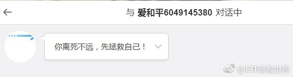

回复@老股民穿越牛熊:不是看，我是算。我每天都算，跑程序跑20分钟。源数据出来第一时间就算。算估值是我人生中第三大最爱干的事。你咬我呀。 一会儿就拉黑。//@老股民穿越牛熊:你每天看估值累不累？心态不好 慢慢练心态吧！@ETF拯救世界:500估值又新低了。人生美好。
回复@李贤1985_319:今天有朋友在微博问，“在雪球很多人都说证券指数已经到了底部区域，e兄看到600，甚至能到500的理由是什么呢。” //@李贤1985_319:在雪球很多人都说证券指数已经到了底部区域，e兄看到600，甚至能到500的理由是什么呢🤔🙏。@ETF拯救世界:$证券公司 sz399975$ 够狠。跌破753就是700见了。然后就是我们的补仓点位，600……
回复@李贤1985_319:不是看到。是极限跌幅。跌到400我不吃惊。就酱。//@李贤1985_319:在雪球很多人都说证券指数已经到了底部区域，e兄看到600，甚至能到500的理由是什么呢🤔🙏。@ETF拯救世界:$证券公司 sz399975$ 够狠。跌破753就是700见了。然后就是我们的补仓点位，600……
回复@豆丁没事:不会。仓位非常巴适。不用着急加车，月底正点开车。//@豆丁没事:E神，这周会发车吗//@ETF拯救世界:好歹也得反弹一波涨个10%换换手吧……//@ETF拯救世界:35%。最近这个区间是成交稀少区。还有大量成本在18左右的筹码。//@ETF拯救世界:37%//@ETF拯救世界:44%@ETF拯救世界:8848获利筹码只剩55%了。这个股票换手虽然低，但是在高位几个月了，基本上接盘的都吃饱了。。。
好歹也得反弹一波涨个10%换换手吧……//@ETF拯救世界:35%。最近这个区间是成交稀少区。还有大量成本在18左右的筹码。//@ETF拯救世界:37%//@ETF拯救世界:44%//@ETF拯救世界:获利比例剩50%了……@ETF拯救世界:8848获利筹码只剩55%了。这个股票换手虽然低，但是在高位几个月了，基本上接盘的都吃饱了。。。
35%。最近这个区间是成交稀少区。还有大量成本在18左右的筹码。//@ETF拯救世界:37%//@ETF拯救世界:44%//@ETF拯救世界:获利比例剩50%了……@ETF拯救世界:8848获利筹码只剩55%了。这个股票换手虽然低，但是在高位几个月了，基本上接盘的都吃饱了。。。
回复@i云腾致雨:不可能//@i云腾致雨:E大心态为什么这么好？别人找的女朋友比你的漂亮，也不嫉妒？@ETF拯救世界:信任两个字在当今这个年代已经非常难得。所以如果有人信你，最好珍惜。别人因你而亏损，当然可以一句“大家都是成年人，不要做巨婴”而推的干净，然而其实未必可以那么简单。所以我坚持一个原则，任何计划里的品种，绝不建议高于我的成本价买入。我不会说自己1块买的，到了1.5还说值值值。你只可能比我成本低，不会比我高。赚的一定比我多。赚的比我多我不嫉妒，很开心。钱这东西，重要不重要？我啲感觉都好重要嘅！but，哪能港，所谓君子爱财取之有道，总是没错了。福未至祸已远，也就够了。
回复@枫93:不会的。我不信一个在村里用50块钱和芙蓉王贿选村长的治疗半身不遂的无证中医会来跟计划……//@枫93:搜了Ｅ大 冒牌货 用了Ｅ大头像冒牌的有18个他是不是被冒牌的骗了 来找正版的Ｅ大报复了呢 搞错了人呢@ETF拯救世界:我该说什么呢。 
回复@小祝Joochill:是的。再说我这个ID，“ETF拯救世界”，意思是指数基金能够让很多炒股不赚钱的人改变投资命运，而非某个人可以拯救世界，我还没那么二……主语是ETF……//@小祝Joochill:这个人语文学的不好，连E大的名字里主语是什么都没有弄清楚……@ETF拯救世界:我该说什么呢。
回复@蜀行天下:意念盘，无需操作。类似于暗物质与气功的结合体。无形无色无味，但当量相当于一万多亿资金在操盘……//@蜀行天下:每次看到你说奶一口我都要深思一段时间，这又是什么操作，我会不会错过一个亿//@ETF拯救世界:稳。忍不住奶一口@ETF拯救世界:$养老产业 sz399812$ 真的稳
信任两个字在当今这个年代已经非常难得。所以如果有人信你，最好珍惜。别人因你而亏损，当然可以一句“大家都是成年人，不要做巨婴”而推的干净，然而其实未必可以那么简单。所以我坚持一个原则，任何计划里的品种，绝不建议高于我的成本价买入。我不会说自己1块买的，到了1.5还说值值值。你只可能比我成本低，不会比我高。赚的一定比我多。赚的比我多我不嫉妒，很开心。钱这东西，重要不重要？我啲感觉都好重要嘅！but，哪能港，所谓君子爱财取之有道，总是没错了。福未至祸已远，也就够了。
回复@Mili:这事的事实众说纷纭。我不评论案情本身。我是说，彭宇案的传播对中国社会造成的巨大的影响。我说的是影响，而非真相。真相，也许永远会被埋葬。---:抱歉，作者已设置仅展示半年内微博，此微博已不可见。